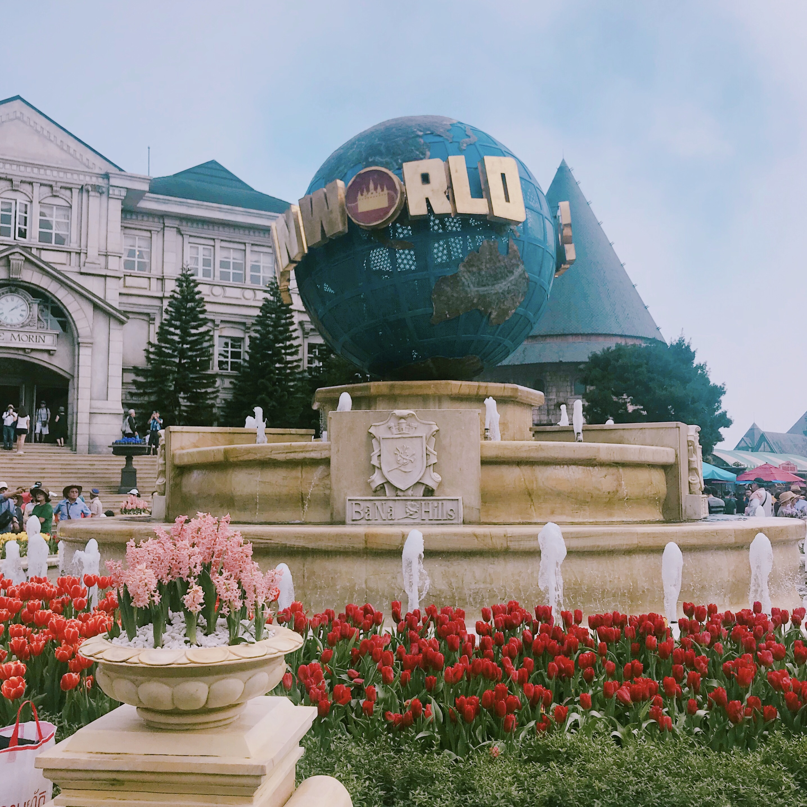
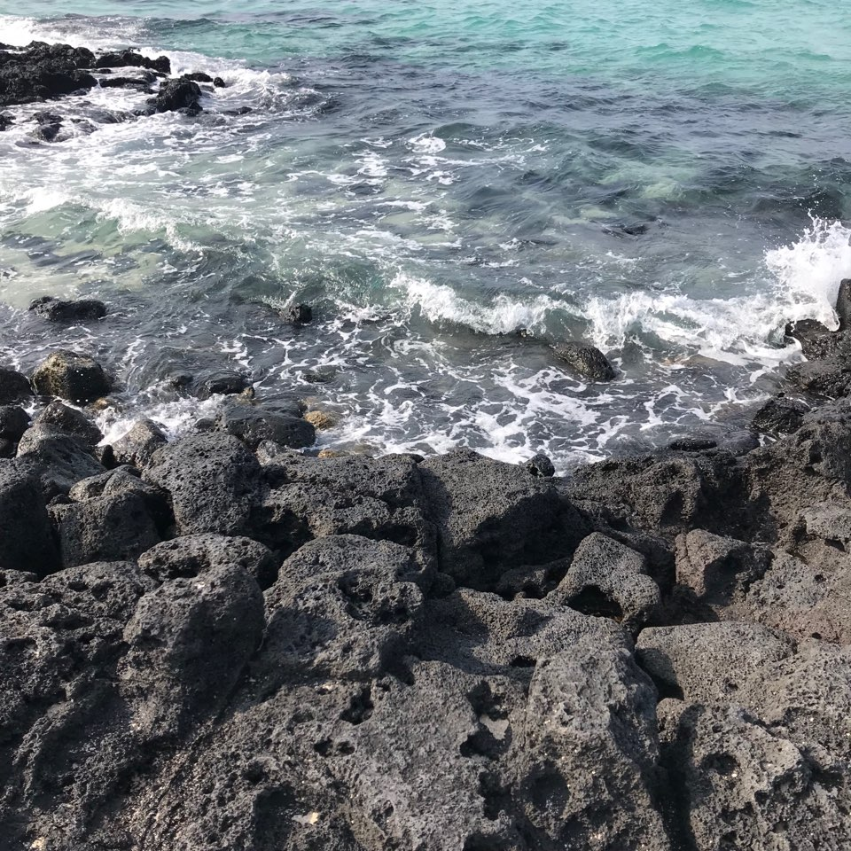

TRAVEL

2018.03.15_일본 가츠오지 사원 승운과 성공을 기원하는 가츠오지의 달마가 경내 여기저기 놓여있는 절.
독특하고도 신기해서 기억에 남는 절이다.
우리나라 절과 비슷하면서도 다른 느낌을 받았다.
절 안에 정원이 예쁘게 꾸며져 있다.

2019.02.20_베트남,다낭 바나힐 고지대에 있어서 하루에도 수십번씩 날씨가 바뀐다는 바나힐.
춥거나 비오는 경우가 많다해서 걱정했는데, 다행히도 화창했다.
놀이공원이 산정상에 있는게 신기했다.
이국적인 풍경과 경치가 너무 예뻤던 곳.

2019.02.25_제주 협재 해수욕장 정말 정말 추운 날씨였지만, 바다 색이 너무 예뻤던 곳이다.
파도소리, 화창한 날씨, 깨끗한 바다 등등 분위기가 좋았다.
겨울이라 사진밖에 찍지 못했지만
여름에 다시 가면 발을 담구고 싶다.